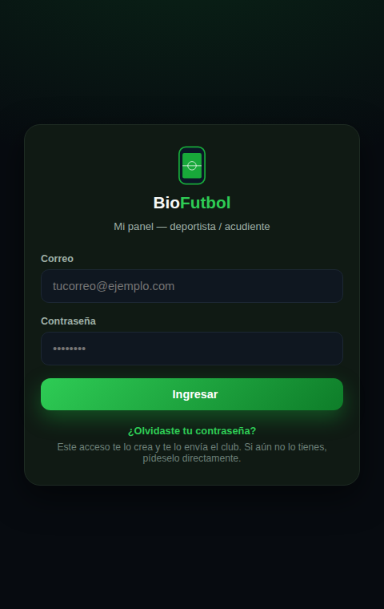
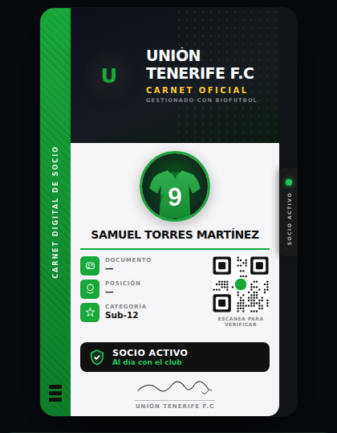
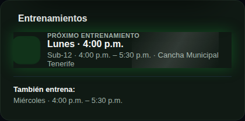
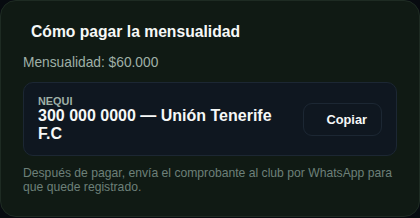
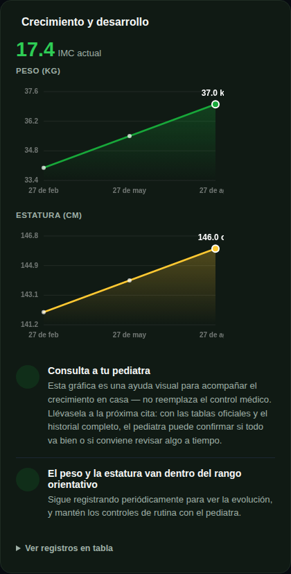
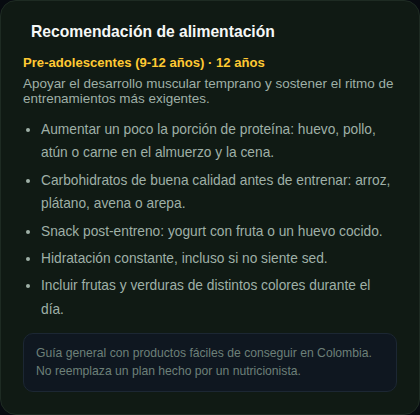
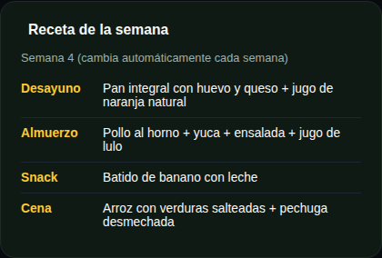

Cómo entrar a tu panel
Tu club te envía por WhatsApp o correo el link de acceso (socio-login.html) junto con un usuario (correo) y una clave inicial.
- Ingresa tu correo y tu clave y toca "Ingresar".
- ¿Olvidaste tu clave? Toca "¿Olvidaste tu contraseña?" y te llegará un correo para definir una nueva.
- Guarda el link en tu celular — es el acceso permanente al panel de tu deportista.

Tu carnet digital
Al entrar ves el carnet digital de tu deportista, con su foto, número, categoría y un código QR de verificación — siempre a la mano desde el celular, sin necesidad de imprimir nada.

Entrenamientos: no te pierdas ninguno
Ve el horario de entrenamiento de la categoría de tu deportista, con sede, día y hora — incluido cuándo es el próximo, para que nunca se te pase.

Cómo pagar la mensualidad
Consulta el valor de la mensualidad y los datos de pago de tu club (Nequi o tarjeta/PSE, según lo que tenga configurado). Después de pagar, envía el comprobante al club por WhatsApp para que quede registrado.

Crecimiento y desarrollo
Si tu deportista es menor de edad, aquí ves su evolución de peso y estatura en gráficas fáciles de entender, junto con recomendaciones generales — un apoyo visual para llevar a la próxima cita con el pediatra.

Recomendación de alimentación
Según la edad de tu deportista, BioFutbol te muestra una guía de alimentación pensada para su etapa de desarrollo y su exigencia física en los entrenamientos.

Receta de la semana
Una idea de desayuno, almuerzo, snack y cena que cambia automáticamente cada semana — para que la alimentación de tu deportista sea variada y fácil de preparar en casa.

¿Tienes dudas?
Escríbele directamente a tu club por WhatsApp y te ayudan a resolver cualquier duda sobre tu panel.
Escribir por WhatsApp